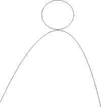
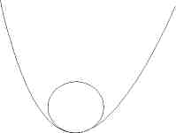

|  | |
|  |
| g>t | g<t | |
| Yd>r (stabil) | Stabile positive gleichgewichtige Staatsschuldenquote | Stabile negative gleichgewichtige Staatsschuldenquote |
| Yd<r (instabil) | Instabile negative gleichgewichtige Staatsschuldenquote | Instabile positive gleichgewichtige Staatsschuldenquote |
| g | t | Yd | r | b | b | b |
| 2% | 1% | 5% | 1% | 25% | 50% | 0% |
| 1% | 2% | 5% | 1% | -25% | 0% | -40% |
| 1% | 2% | 1% | 5% | 25% | 30% | 20% |
| 2% | 1% | 1% | 5% | -25 | -20% | -30% |
| g | Staatsausgaben | t | Netto-Transfereinnahmen |
| Yd | Wachstumsrate | r | Nominalzins |
| b | Staatsschuld |